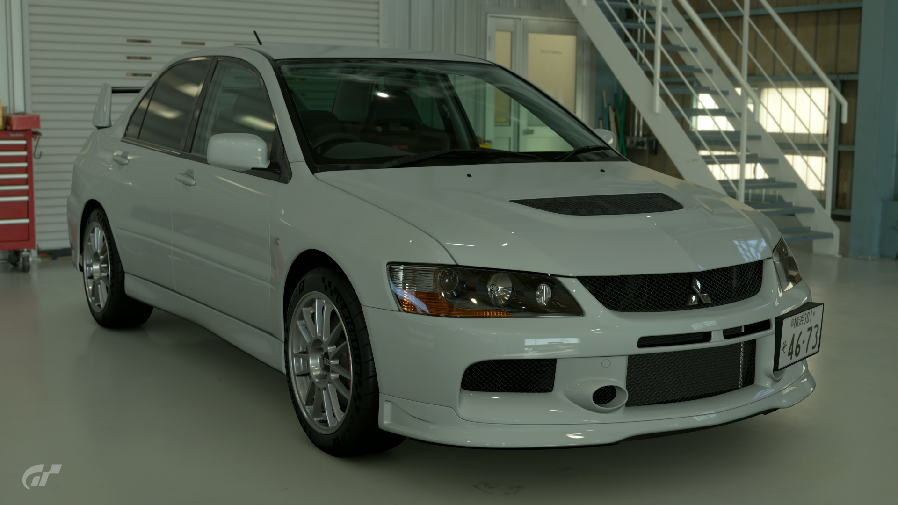
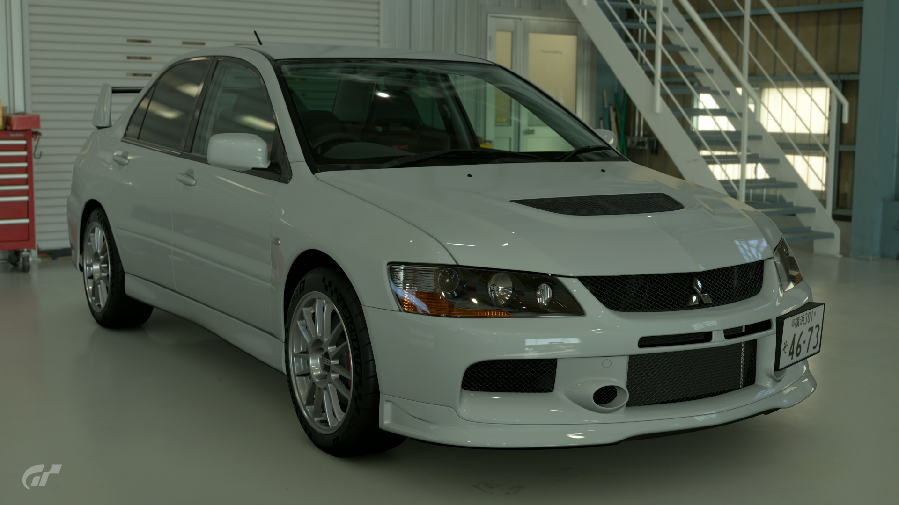

2006 Mitsubishi Lancer Evolution IX
There are two ways of sorting Lancer Evolution generations: by number or by base model. According to the base model system, the Lancer Evolution VII, VIII, and IX all belong to the third generation. Of these, the Lancer Evolution IX MR was the last model. It was also the last Lancer Evolution to be equipped with Mitsubishi's 4G63 4-cylinder turbo engine. With a strong turbocharger and continuous variable valve timing, it offered better engine response than ever before. And its sporty look helped distinguish it as the deinitive IX version. The "MR" in its name sands for "Mitsubishi Racing," an exclusive label reserved for Mitsubishi's top tier sports cars.
- Used (462.8 mi)
- Stock
- 6MT
- Saitama, Japan
- Scotia White
- 277hp
¥2,650,000